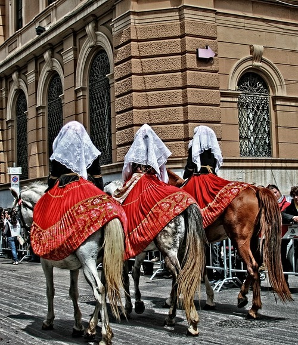
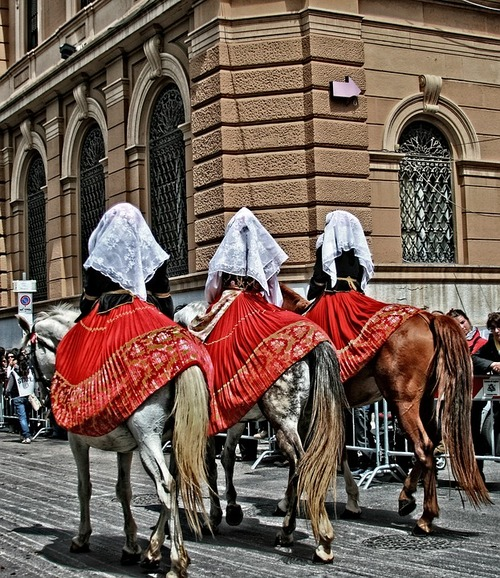

ABOUT
Little history and facts

Characteristics of the island
Sardinia is undoubtedly a synonym for exclusive holidays. The second-largest island in the Mediterranean Sea is famous for its tourist image, elegance, class, and a little hint of mystery. The phenomenon of Sardinia can only be understood by getting to know it personally. Sandy beaches, steep rocks, fairy-tale bays, islets, and above all the crystal clear sea with its emerald color, are a breakthrough for the island's values. Sardinia boasts a rich past, the remnants of which are impressive testimonies of the Nuragic civilization. More than 7,000 nuraghes, megalithic structures in the shape of a truncated cone, which still intrigue scientists, have been preserved. Sardinia fascinates with original rituals, folklore, dialect, and cuisine based on local products. The most developed tourist destination is the northern part of the island with the famous Costa Smeralda - known as an Emerald Coast. The region owes its name to the extremely intense, even mesmerizing color of the sea. A varied shoreline with rock formations, hills descending straight into the sea, Mediterranean vegetation, crystal clear water create unique landscapes. The famous Sardinian beaches are often intimate and always picturesque, hidden in small coves, that's why for many visitors and locals Sardegna it seems to be a Fairy Island.
Places you can not skip during the trip
- Cagliari – the capital of Sardinia with a historically interesting old town, you can visit the castle, cathedral, several museums, bastion, the local market, and famous long Poetto Beach
- Strada Panoramica - scenic road from Porto Teulada to Chia, on the way you can see beautiful panoramic landscapes of southeast coastline, you can stop and take a deep in one of the famous beaches
- Island Sant’Antioco - 4th biggest island in Italy, you can visit basilica, museum, and port itself, in the area also many beautiful beaches and almost sister Island San Pietro
- The Nuraghes - nuraghes are rock structures from the Bronze age and the Nuragic civilization, they are everywhere on the island. The most visited in Sardinia is Su Nuraxi Nuraghe, a large complex in Barumini listed on a UNESCO world heritage site
- Tharros and the Sinis peninsula - archeological site with Phoenician ruins close to the Gulf of Oristano, with several beaches, the most famous being Is Aruttas and Putzu Idu
- Oristano - a very pleasant city in the western part of the island, perfect to walk around and visit the historic center with the church, towers, and many squares
- Bosa - is a small town with pastel-colored houses, located next to a river. With its Castle of Serravalle up the hill and old bridge Ponte Vecchio, Bosa has a nice viewpoint to take pictures of
- Alghero - the city on the North-Western coast, is famous for its historical center, paved alleys, and monuments, small cafeterias, and gift shops
- Costa Paradiso - a stunning coast with many coves and big holiday resorts, comparable almost to Azure Coast. The famous cove in Costa Paradiso is Li Cossi with the pink granite rock and the turquoise water gives an unforgettable impression
- Castelsardo - a lovely medieval village located in Sassari province with castles, towers, ramparts, museums, small shops with souvenirs, and local crafts. In this area, you can see the most famous natural formation the Elephant Rock
- The Neptune caves - located close to Alghero are 4km long but unfortunately only a part of it is open to the public, attractions you can see are stalactites and stalagmites and an inland lake
- Capo Testa - this amazing place is famous for giant rock formations with surprising shapes due to sea erosion in this area. Also worth seeing plenty of unique beaches like Spiaggia Zia Culumba, Cala Spinosa, Cala Francese
- Orgosolo - a beautiful mountain village is famous for its “murals”, paintings and frescos painted directly on the facades of the houses. Is possible to find more than 200 murals in Orgosolo, many of them have some kind of political and artistic message related to the history of the island
- Gulf of Orosei - the main attraction is the cruises, taking tourists to coves that are accessible only by boat. From small Cala Gonone leave most boats to discover best coves like Cala Luna, Cala Sisine, Cala Biriola, Cala Mariolu, Cala Gabbiani, Cala Goloritze
- La Maddalena Island - is part of the Arcipelago di La Maddalena National Park, made of 7 islands. Is very famous for its beaches and fairy landscapes like Bassa Trinita, Spiaggia di Monte di Rena, Spalmatore, Testa del Polpo or Capocchia du Purpu. The best way to visit places is to rent a car and take a round with stops on the way
- Costa Smeralda and Porto Cervo - the most luxurious part of the island, filled with boats, boutiques, billionaires, and celebrities from around the world. Specific climate and atmosphere of popularity make this place very attractive and very expensive. Bath in Costa Smeralda recommended in Pevero Beach, Principe Beach, Romazzoni Beach and Ruja Beach
- Gorropu Gorge - one of the deepest in Europe, is definitely one of the most beautiful hiking spots in Sardinia. There are several hike departure points to go to the gorge, no matter which one you choose, it’s at least a 5 hours hike. The biggest attraction of a scenic road is the canyon with limestone cliffs
- Sardinian cuisine - worth trying at least once eat at an agriturismo farm, it’s the best place to taste authentic Sardinian cuisine. Sardinian cooking is based on a Mediterranean cuisine full of olive oil, local cheese, cured meat, roasted meat like porceddu, freshly caught fish, roasted and marinated vegetables, fresh salads, pasta dishes like gnochetti and culurgiones, deserts like the sebadas - fried ricotta puff pastries topped with honey. While spending your holidays in Sardinia, you should also taste the local wines, which are considered to be one of the best in Italy: for example, the fine white wines of Vermentino di Gallura or strong red Cannonau are a great complement to traditional Sardinian dishes. Is not a good thing to forget about Mirto di Sardegna a popular digestive liqueur obtained from the myrtle plant through the alcoholic maceration of the berries or a compound of berries and leaves

 
